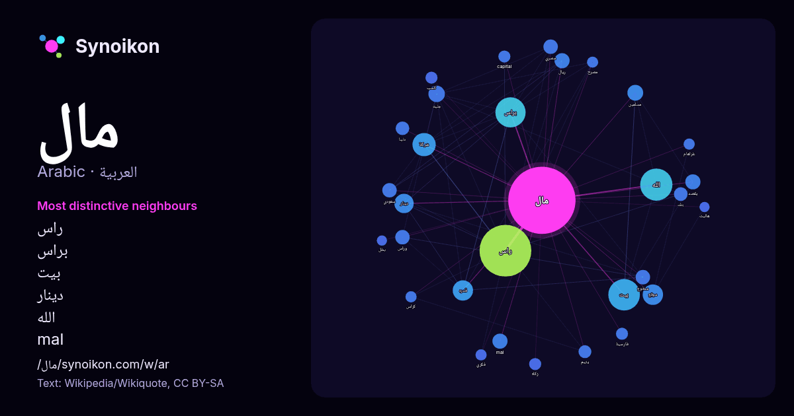

العربية · كلمة شائعة
مال
“money” · الكلمات الموجودة حولها في 687 ورودًا من ويكيبيديا, Wikiquote.

الجيران الأكثر تميّزًا
- راس 70×
- براس 44×
- بيت 28×
- دينار 18×
- الله 14×
- mal 12×
- جنيه 12×
- مدفوع 11×
- وراس 11×
- ريال 10×
- يتيم 8.8×
- دنيا 8.8×
- يقصد 8.5×
- قدره 8.4×
- capital 7.9×
- موقع 7.9×
- سعودي 7.8×
- مسلمين 7.8×
- زكاة 7.7×
- كسب 7.5×
× = كم مرة أكثر مما في نصوص ويكيبيديا العامة.
الجيران الأكثر تكرارًا
- راس 129
- الله 50
- بيت 48
- براس 44
- شركة 26
- قدره 20
- موقع 20
- دينار 18
- يبلغ 17
- جنيه 13
- عبد 12
- مسلمين 12
- mal 11
- ريال 11
- يقصد 11
- دولار 10
- سعودي 10
- علم 10
- فيلم 10
- مدفوع 10
في السياق
- المال هو أي سلعة يمكن استخدامها للتجارة وحدةً للحساب ولتخزين القيمة. وقيمة المال تكتسب من قدرته الشرائية والتي تنخفض عادةً على مر السنوات ويطلق على المال Wikipedia snippets · مال
- قد يُقصد من «مال» ما يلي: مال: أي سلعة يمكن استخدامها وحدة للحساب ولتخزين القيمة. مال (موريتانيا): بلدية موريتانية. رأس مال: مصطلح اقتصادي. تمويل: فعل Wikipedia snippets · مال (توضيح)
- قد تشير كلمة المآل غلى المعاني التالية حسب السياق: مآلات الأفعال، وهي قاعدة كبيرة في الفقه الإسلامي. مآل (طب)، هو مصطلح طبي يشير إلى التنبؤ بالنتيجة المستقبلية Wikipedia snippets · مآل (توضيح)
- والتكاليف وربح. "معلومات عن رسم (مال) على موقع d-nb.info". d-nb.info. مؤرشف من الأصل في 2023-05-13. "معلومات عن رسم (مال) على موقع babelnet.org". babelnet Wikipedia snippets · رسم (مال)
- بحيرة مال هي بحيرة في ولاية البراكنة الموريتانية، تقع على بعد 65 كـم (40 ميل) شرقاً جنوب شرق مدينة ألاك، تتراوح مساحتها بين 5,250 هكتار (13,000 أكر) في Wikipedia snippets · بحيرة مال
- مال الدنيا هو مسلسل إثارة درامي مغربي عُرض سنة 2023، من تأليف رشيد حمان ونجيب التادلي، وإخراج أحمد أكساس، ومن بطولة محسن مالزي، هدى مجد، ناصر أقباب، رشيد Wikipedia snippets · مال الدنيا (مسلسل)
- بين الخليجي وموسيقى البوب المغربية والإلكترونية. تلاها فيديو كليب أغنية مال حبيبي مالو من نفس الألبوم والتي حققت أعلى المشاهدات على يوتيوب. وجاءت انطلاقته Wikipedia snippets · سعد لمجرد
- بيت مال المسلمين أو بيت مال الله هو المبنى والمكان الذي تحفظ فيه الأموال العامة للدولة الإسلامية من المنقولات، كالفيء والخمس والغنائم ونحوها، إلى أن تصرف Wikipedia snippets · بيت المال
كلمات أخرى
- أغنية
- إله
- تاريخ
- جبل
- جرس
- جزيرة
- جسر
- حديقة
- حصان
- حقيقة
- حياة
- خبز
- خريطة
- خريف
- ذهب
- زمن
- ساعة
- شاي
- شتاء
- صحة
- صحراء
- صمت
- صيف
- طبيعة
- طريق
- طعام
- ظل
- عائلة
- عاصفة
- عسل
- علم
- عمل
- غابة
- فن
- قطار
- قطة
- قلب
- قوة
- كلب
- لغة
- ماء
- مدينة
- مرآة
- مطر
- ملح
- مناخ
- موت
- نجم
- والدة
حُسبت مسبقًا في 2026-10-09 بالإعدادات الافتراضية (±5 كلمات، مدوّنة متوسطة). يمكن للخريطة التفاعلية تحديثها ببيانات حية.
واجهة مترجمة آليًا؛ نرحب بالتصحيحات.